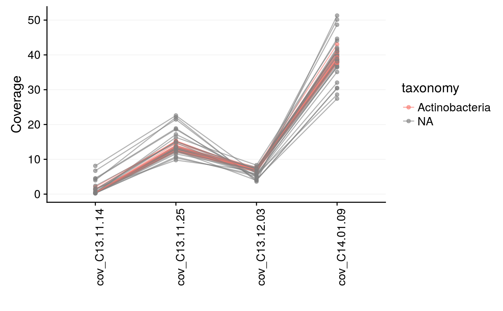

mmplot_cov_profiles.RdPlots all coverage profiles in the data for comparison. This is useful for identifying scaffold patterns across multiple coverage profiles and spot potential contaminants.
mmplot_cov_profiles( mm, normalise = FALSE, alpha = 0.6, color_by = NULL, color_vector = c("blue", "green", "red"), color_scale_log10 = FALSE, y_scale_log10 = FALSE, plot_lines = TRUE, interactive_plot = FALSE, mm_normalise = NULL, mm_normalise_index = NULL )
| mm | (required) A dataframe loaded with |
|---|---|
| normalise | (Logical) Normalises each coverage column in |
| alpha | The transparancy of the scaffold points and lines, where 0 is invisible and 1 is opaque. (Default: |
| color_by | Color the scaffolds by a variable in |
| color_vector | The colors from which to generate a color gradient when |
| color_scale_log10 | (Logical) Log10-scale the color gradient when |
| y_scale_log10 | (Logical) Log10-scale the y axis. (Default: |
| plot_lines | (Logical) Connect scaffolds with lines. (Default: |
| interactive_plot | (Logical) Return an interactive |
| mm_normalise | A dataframe loaded with |
| mm_normalise_index | A coverage column to serve as an index for normalisation. |
A ggplot or plotly object. Note that mmgenome2 hides all warnings produced by ggplot objects.
#> # A tibble: 97,285 x 13 #> scaffold length gc cov_C13.11.14 cov_C13.11.25 cov_C13.12.03 cov_C14.01.09 #> <chr> <dbl> <dbl> <dbl> <dbl> <dbl> <dbl> #> 1 1 8264 57.8 1.44 53.6 0 0.066 #> 2 2 1027 57.0 0.625 24.2 0 0 #> 3 3 1665 55.9 13.5 434. 0.166 0.177 #> 4 4 9056 35.9 0.01 23.4 0 0 #> 5 5 3343 64.0 3.20 16.4 0 0 #> 6 6 98207 39.1 0.00966 24.5 3.29 9.85 #> 7 7 6480 63.0 2.61 19.2 1.46 12.3 #> 8 8 15790 61.7 2.78 21.2 1.62 10.3 #> 9 9 1403 70.4 85.1 192. 0 0 #> 10 10 2018 70.2 50.3 101. 0 0 #> # … with 97,275 more rows, and 6 more variables: PC1 <dbl>, PC2 <dbl>, #> # PC3 <dbl>, geneID <chr>, taxonomy <fct>, rRNA16S <fct>selection <- data.frame( cov_C13.11.25 = c(7.2, 16.2, 25.2, 23.3, 10.1), cov_C14.01.09 = c(47, 77, 52.8, 29.5, 22.1) ) mmgenome2_extraction <- mmextract(mmgenome2, min_length = 3000, selection = selection, inverse = FALSE )#>mmplot_cov_profiles(mmgenome2_extraction, color_by = "taxonomy", normalise = FALSE )